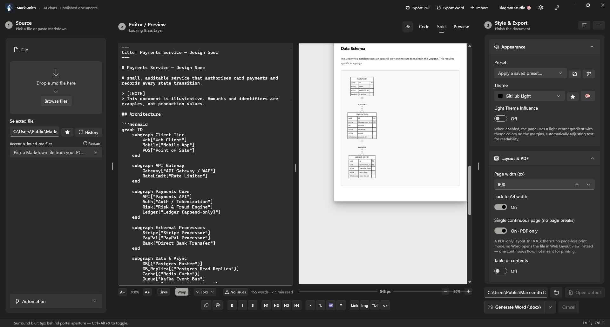
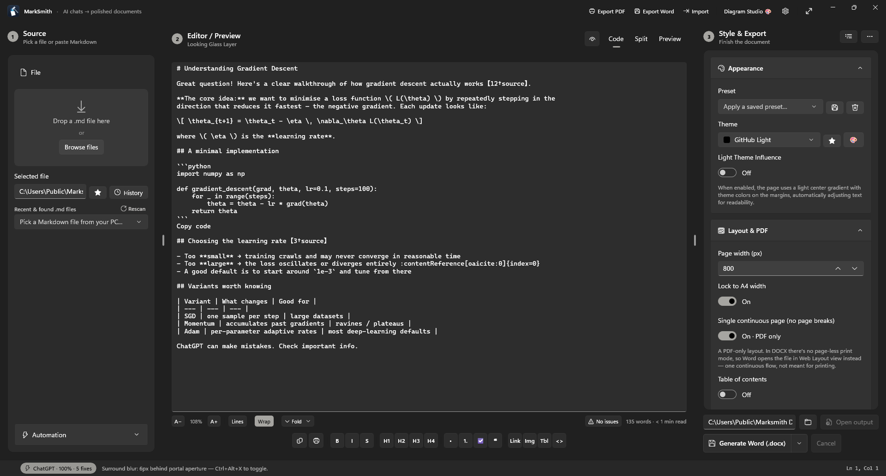
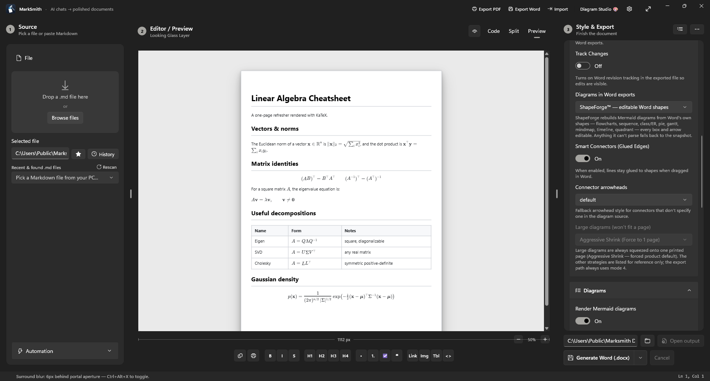
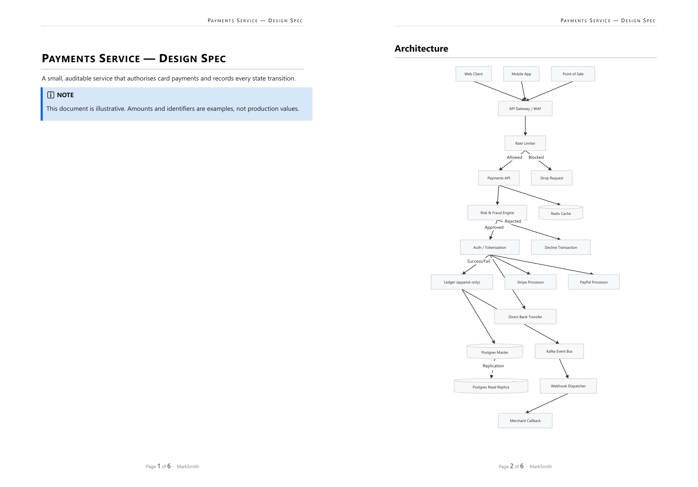
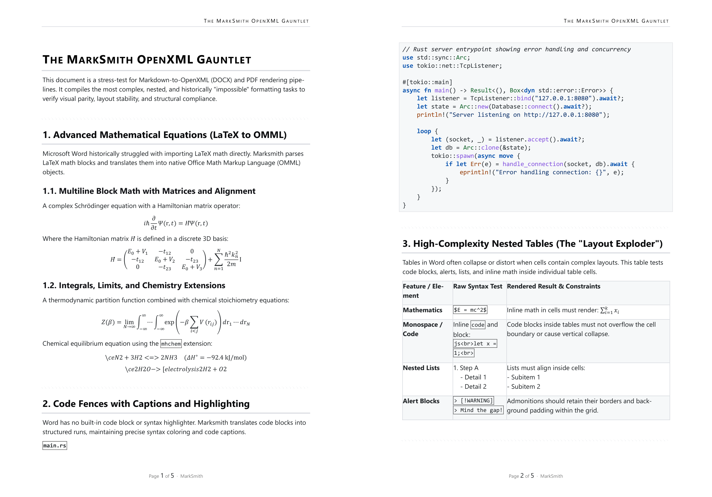
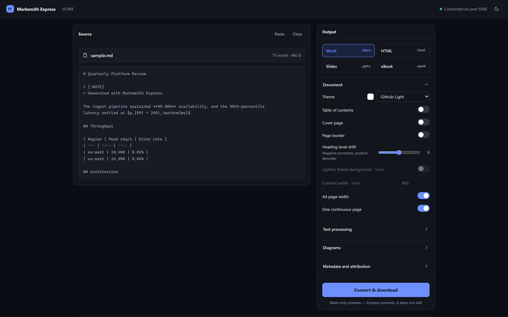

RECORDED FROM A RELEASE BUILD
This is the app. Actually running.
No mockup, no animation — captured off the real MarkSmith window in split view. The document streams in over the local POST /api/ingest endpoint, the same channel the browser extension uses. Then the Looking Glass opens, and a sentence typed through the aperture lands in all three places at once: the glass, the rendered page behind it, and the Markdown editor in the other pane.
Marksmith — Q4 Platform Review.md — Looking Glass
Screenshots, straight off the window
Every image below is a PrintWindow capture of the running Release build — nothing composited, nothing hand-drawn. Click any shot to enlarge or download the real generated DOCX files to test in Word.


[12†source], stray :contentReference markers and \( \) math delimiters, all cleaned on the way to Word.
Download chatgpt-export.docx



